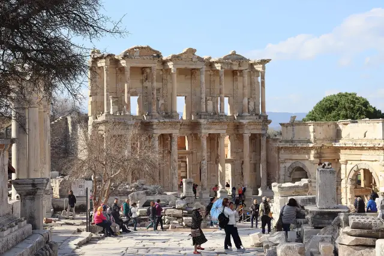
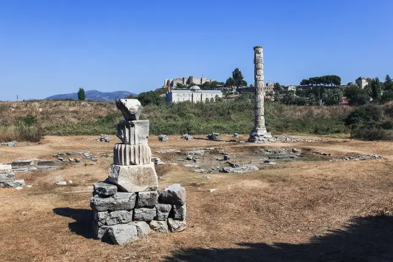
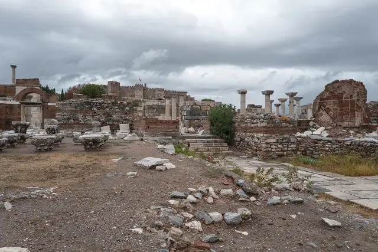
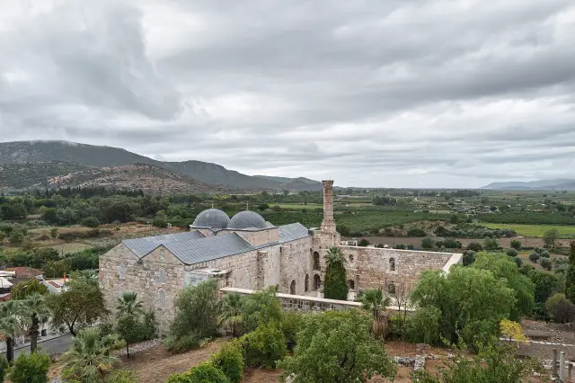
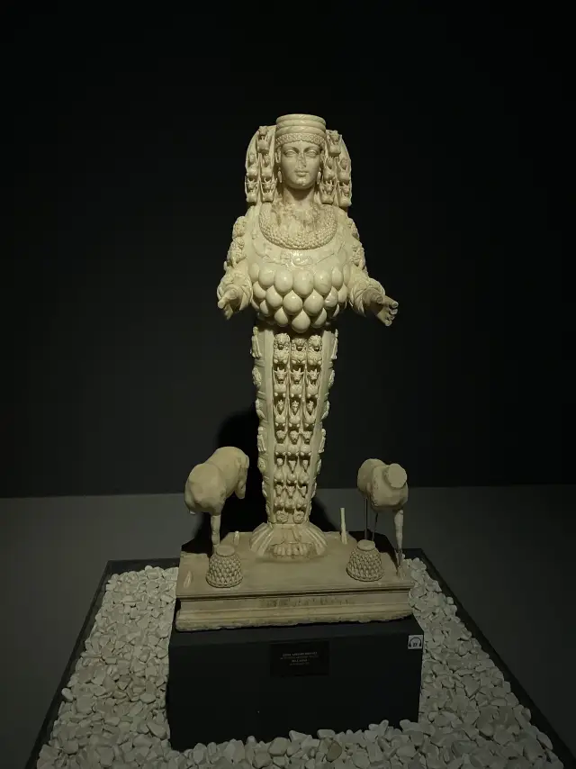
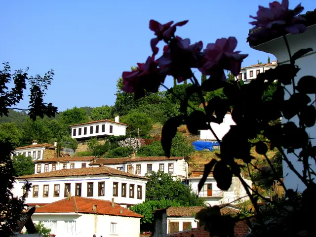

01 · ANCIENT CITY
Ancient City of Ephesus
A Roman port city whose processional way leads past the Library of Celsus, Hadrian’s Temple and the terrace houses.
West of Selçuk centre · 37.9394, 27.3403
Student project · For teaching purposes only
A DISTRICT OF SHIFTING SHORES
Most of Selçuk’s great places lie within a few kilometres of the town centre. Walk between the museum, the Artemision and Ayasuluk Hill; give Ephesus its own morning; save Şirince for the evening.
A FIRST ROUTE
Showing all six places.

A Roman port city whose processional way leads past the Library of Celsus, Hadrian’s Temple and the terrace houses.
West of Selçuk centre · 37.9394, 27.3403

A single re-erected column marks one of the ancient world’s great sanctuaries, once counted among the Seven Wonders.
Selçuk centre · 37.9497, 27.3639

Remains of a great early Christian basilica sit below the medieval fortress that overlooks today’s town.
Selçuk centre · 37.9531, 27.3677

A fourteenth-century mosque at the foot of Ayasuluk Hill, marking the arrival of Turkish principalities in the valley.
Selçuk centre · 37.952, 27.366

Finds from Ephesus and the Artemision, including statues of Ephesian Artemis, shown in themed halls in the town centre.
Selçuk centre · 37.9473, 27.3678

A hillside neighbourhood of stone houses, fruit wines and olive groves, named a Best Tourism Village by UN Tourism in 2023.
Hills east of Selçuk · 37.944, 27.432
A NOTE ON DISTANCE
The town-centre sites are walkable; the ancient city and Şirince need transport. Check current access and opening times, then give each part of the day breathing room.
Build a slower itinerary